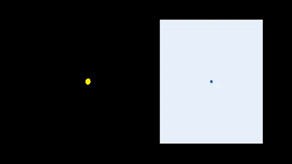

Consider a target probability density \(\pi(x) = \frac{\overline{\pi}(x)}{\mathcal{Z}}\) on \(\mathbb{R}^D\) that is known up to a normalizing constant \(\mathcal{Z}> 0\). We also have a different probability density \(p_0(x)\). The goal is to gradually tweak \(p_0(x)\) so that it eventually matches \(\pi(x)\). More concretely, we aim to perform a gradient descent on the space of probability distributions to reduce the functional
\[ \mathcal{F}(p) \; = \; \mathop{\mathrm{D_{\text{KL}}}} {\left( p, \pi \right)} \; = \; \int p(x) \, \log {\left\{ \frac{p(x)}{\overline{\pi}(x)} \right\}} \, dx \, + \, \textrm{(constant)}. \]
This approach can be discretized: assume \(N \gg 1\) particles \(X_0^1, \ldots, X_0^N \in \mathbb{R}^D\) forming an empirical distribution that approximates \(p_0(dx)\),
\[ p_0(dx) \; \approx \; \frac{1}{N} \sum_{i=1}^N \, \delta_{X_0^i}(dx). \]
Define \(X_{\delta}^i = X_0^i + \delta_t \, \mu(X_0^i)\) where \(\delta_t \ll 1\) denotes a time discretization parameter and \(\mu:\mathbb{R}^D \to \mathbb{R}^D\) is a “drift” function. Finding a suitable ‘drift function’ is the main problem. According to the Fokker-Planck equation, the computed empirical distribution
\[ p_{\delta_t}(dx) \; \approx \; \frac{1}{N} \sum_{i=1}^N \, \delta_{X_{\delta_t}^i}(dx) \]
approximates \(p_{\delta_t}(x)\) given by
\[ \frac{p_{\delta_t}(x)- p_0(x)}{\delta_t} \; = \; -\nabla \cdot {\left[ \mu(x) \, p_0(x) \right]} . \tag{1}\]
What is the optimal drift function \(\mu: \mathbb{R}^D \to \mathbb{R}^D\) that ensures that \(p_{\delta_t}\) comes as close as possible to \(\pi\)? Typically, we select \(\mu:\mathbb{R}^D \to \mathbb{R}^D\) such that the quantity \(\mathcal{F}(p_{\delta_t})\) is minimized, provided that \(p_{\delta_t}\) is not drastically different from \(p_0\). One method is to use the \(L^2\) Wasserstein distance and assume the constraint
\[ \mathop{\mathrm{D_{\text{Wass}}}}(p_{0}, p_{\delta_t}) \approx \int p_0(x) \, \| \delta_t \, \mu(x) \|^2 \, dx \leq \varepsilon \tag{2}\]
for a parameter \(\varepsilon\ll 1\). More pragmatically, it is generally easier (eg. proximal methods) to minimize the joint objective
\[ \mathcal{F}(p_{\delta_t}) + \frac{1}{2 \varepsilon} \, \mathop{\mathrm{D_{\text{Wass}}}}(p_{0}, p_{\delta_t}). \tag{3}\]
Based on equations Equation 1 and Equation 2, a first-order expansion shows that the joint objective Equation 3 can be approximated by
\[ \begin{align} -\int &\nabla \cdot \Big\{ \textcolor{red}{[\delta_t \mu]}(x) \, p_0(x) \Big\} \, \log {\left\{ \frac{p_0(x)}{\overline{\pi}(x)} \right\}} \, dx \, \\ &\qquad + \qquad \, \frac{1}{2 \varepsilon} \, \int p_0(x) \, \| \textcolor{red}{[\delta_t \, \mu]}(x) \|^2 \, dx, \end{align} \tag{4}\]
a relatively straightforward quadratic function of the drift function \(\mu: \mathbb{R}^D \to \mathbb{R}^D\). The optimal drift function, ie. the minimizer of Equation 4, is given by \[ \mu(x) \; = \; - {\left( \frac{\varepsilon}{\delta_t} \right)} \, \nabla \log {\left\{ \frac{p_0(x)}{\overline{\pi}(x) } \right\}} . \]
Put simply, this suggests that we should select the drift function proportional to \(-\nabla \log[p_0(x) / \overline{\pi}(x)]\). To implement this scheme, we begin by sampling \(N \gg 1\) particles \(X_0^i \sim p_0(dx)\) and let evolve each particle according to the following differential equation
\[ \frac{d}{dt} X_t^i \; = \; - \nabla \log {\left\{ \frac{p_t(X_t^i) }{ \overline{\pi}(X_t^i) } \right\}} \]
where \(p_t\) is the density of the set of particles at time \(t\). It is the usual diffusion-ODE trick for describing the evolution of the density of an overdamped Langevin diffusion,
\[ dX_t \; = \; -\nabla \log \overline{\pi}(X_t) \, dt \; + \; \sqrt{2} \, dW_t. \]
This can be shown by writing down the associated Fokker-Planck equation. This heuristic discussion shows that minimizing \(\mathop{\mathrm{D_{\text{KL}}}}(p, \pi)\) by introducing a gradient flow in the space of probability distributions with the Wasserstein metric essentially produces a standard overdamped Langevin diffusion. Indeed, transforming this heuristic discussion into a formal statement is not trivial: the constructive proof in (Jordan, Kinderlehrer, and Otto 1998) is now usually referred to as the JKO scheme.
The above derivation shows that the Wasserstein distance plays particularly well with minimizing functionals of the space of probability distributions. The same heuristic discussion shows that minimizing a functional of the type
\[ \mathcal{F}(p) \; = \; \int \Phi[p(x)] \, \nu(dx) \]
for some cost function \(\Phi: (0, \infty) \to \mathbb{R}\) and distribution \(\nu(dx)\) leads to choosing a drift function \(\mu:\mathbb{R}\to \mathbb{R}\) minimizing
\[ \int -\nabla \cdot \Big\{ \textcolor{red}{[\delta_t \, \mu]}(x) \, p(x) \Big\} \Phi'[p(x)] \, \nu(dx) \, + \, \frac{1}{2 \varepsilon} \, \int p_0(x) \, \| \textcolor{red}{[\delta_t \, \mu]}(x) \|^2 \, dx. \]
This can be approached identically to what as been done in the case of minimizing \(\mathop{\mathrm{D_{\text{KL}}}}(p, \pi)\).